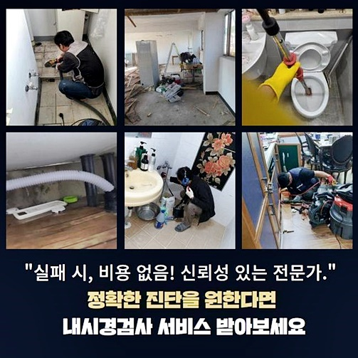
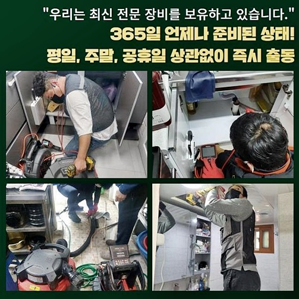
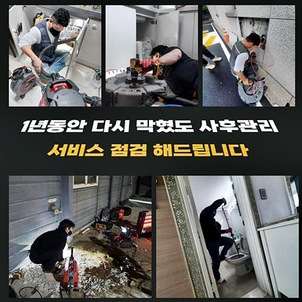
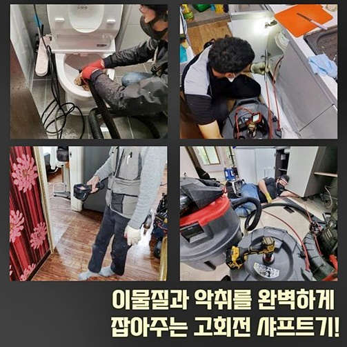
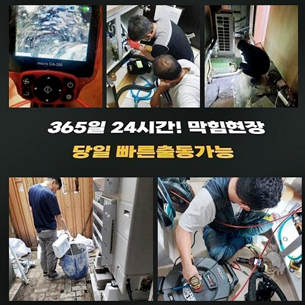
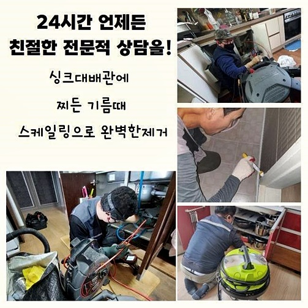
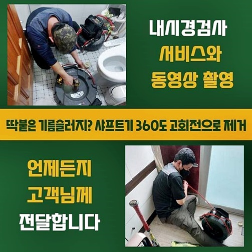

🏠 용산 한강로1가오수관막힘 동자동 하수구뚫는비용 누수공사
용인시 처인구 배관막힘 전문 시공 후기

📋 작업 개요
- 위치: 용인시 처인구, 수원시 영통구, 화성시 동탄
- 서비스 유형: 배관막힘, 누수수리, 고압세척, 내시경점검
- 작업 일시:
- 업체명: 하수구수사대 (010-5615-2118)
🔍 문제 상황
용산 한강로1가오수관막힘 동자동 하수구뚫는비용 누수공사
이른 아침에 하수라인의 오류로 배수관이 역류하는 난감한 전반적인 컨디션이 터졌다는 상담의뢰를 접수하고 문제파악을 해보고자 주소지로 출동하였습니다
이러한 하수시스템의 오류는 단순하게 끝날 일이아니라 그 다음 문제로 이어지는 전반적인 컨디션이 고려되므로 빠른 대처가 우선이지만 큰일이 아니라고 하시는 경우들이 꽤 생기더라구요
저희 전문팀이 수리과정을 완료한 문제의 배수관을 직접보면서 하수시스템의 오류는 어떤 대응을 해야하는지와 처리까지는 전문진은 무슨방법을 적용해야하는지 명확하게 보여드리겠습니다
배관들에 문제 발생시 말씀드렸던 바와같이 파생되는 복합현상이 높은 가능성으로 일어납니다
초입시점에는 보통의 날과다르게 물빠지는속도가 더뎌진 것 같은 일만 보이시겠지만, 그냥둘수록 원활한 흐름이 불가능해지면서 종합적으로 정체가 발생되고 불순물이 서로굳어 막히는 문제들로 이어집니다

🔎 원인 분석
💡 전문가 진단: 정밀 진단 장비를 사용하여 슬러지의 고착 여부를 판명하고 타격/세척 작업을 실시했습니다.
이어지는 문제점들이 발생했다면 전반적인 컨디션이 좋은 상태는 아닐것을 뜻하는만큼 피해부위를 막아내기 위해서 망설이지 마시고 전문진의 초반진압으로 해결하세요
배수관의 순환 문제들이 발견됐을땐 전문작업이 필연적이지만 금액적인 부분이 부담스러워서 전문진단을 미루시기도 합니다
상가와 주거지 밀접지구는 더욱 막힘사고로 인한 일 등의 피해가 생겨납니다
수많은 업장에서 수없이 내보내지는 불순물이 메인배관같은 특정한 부분에 축적되는 경우에 점점 큰피해를 발생시키는데 가족단위의 세대와 입점하고 있는 업종들이 많아질수록 이물질들이 쌓이는 문제는 흔하게 발견됩니다
배관내벽으로 흐르게 되는 침전물들은 배관 내벽에 달라붙는 사용자들이 다반사라 정체가 시작된다면 점점 고체화되며 막히는 원인이됩니다
덩어리가 커진 이물질이 정상적인 순환을 방해 해버리는 원인으로 작용하게 되면서 하수로 문제들을 야기하는 근본적인 요인입니다
의뢰가 들어와서 요청지로 가게되면 제일먼저 물의 순환 속도를 보면서 문제 범위를 확실히 파악해냅니다

🔧 작업 과정
전문장비를 통하여 배수가 되는 최대속도를 보고 작업방법을 결정하는데 이번에 작업했던 지역은 하수라인을 통하여 물의 흐름이 진행되지 않았고 고약한 냄새가 발견되는 모습들까지 밝혀냈습니다
이런경우에 모든 하수라인에 불순물이 쌓여있을 일들이 자주 있는데 빠르게 오염원을 제거하지 않으면 배수로의 내면에 오염물의 팽창이 반복적으로 생기면서 하수시스템이 망가지는 최악의 상황을 대비해야하는 상황들이 오지않도록 이상이 일을땐 반드시 사전점검을 받아보세요
간결한 점검으로 파악해보니 사소한 문제들이 아님을 확인했으며 긴급하게 작업들이 요구되는 상태라서 내시경장비를 활용하여 메인의 하수시스템을 전부 체크업하는 과정들을 진행했습니다
하수라인이 역류함에 있어 이어지는 오류상황들이 발견되는 경우에 내시경장비를 통한 작업이 첫번째로 우선시됩니다
오랜시간을 투자해서 하나씩 확인하는 작업들을 진행시키는 목적은 근본이 되는 원인들을 신중하게 파악하기 위해서입니다
기초적인 룰을 벗어나 일정한 기준 없이 이어지는 수리하는 과정들은 오염원을 완벽하게 파쇄하는 것이 불가능하므로 연관된 문제들로 옮겨갈수 있습니다
중요한 설비장치를 현장팀이 조사해본 바로는 저희가 처음 처음 예상한 것과 같이 노후화된 배관으로 오염물이 쌓인 모습을 확인했으며 일정 부위의 내벽에 달라붙은 오염물이 물과 만나 부패까지 진행된 상태라는 것을 확인할 수 있었습니다
오래도록 배관을 신경쓰지 않으셨는지 생각했었던 것보다 많은 양의 이물질들이 층을 이룬 상태라 효과적으로 분쇄하여 배출을 가능케하는 방식에는 높은 압력으로 물을 분사하는 장비가 상황에 적합합니다
고압 세척 작업에 대해 쉽게 말씀드려 보자면 높은 압력으로 하수를 분사해 불순물을 파괴시키는 꼴로 과정들이 진행됩니다
하수가 흘러오는 길과 거꾸로 작업들을 진행시키므로 배관의 안쪽으로 위치를 잡거나 내부벽에 자리한 불순물도 모조리 세척하는 과정을 만들어냅니다
하수배관의 문제점을 위한 해결책은 노폐물을 파쇄하는 것인 만큼 고압의 세척작업들이 진행가능한 일이라면 고장이 난 하스시스템을 말끔하게 정리할 수 있습니다


✅ 작업 완료
하수관 막힘현상들이 지속적으로 발견되거나 침전물이 쉽게 층을 이뤄놓는다면 주기적으로 전문적인 팀에게 연락해 고압 세척 작업들을 진행하는 것들이 배관의 건강에 가장 좋은 방법입니다
배수관은 큰일이 생기지 않으면 그냥 쓰게되는 경우들이 일반적인 관례라 악취가 올라오는 일이 번번이 발생합니다
하수배관의 말썽이 적발 된다면 신속정확하게 의뢰를 주시는게 더 큰피해들로 퍼져가는걸 막을수 있다라는 사실을 잊지 않아주시길 부탁드리며 이번포스팅은 이것으로 마치겠습니다




⚠️ 하수구 배관 막힘 예방 및 관리 가이드
- ✅ 머리카락, 비닐, 물티슈 등 물에 분해되지 않는 이물질은 절대 흘려보내지 마세요.
- ✅ 기름기 많은 식기는 설거지 전 키친타올로 먼저 기름때를 닦아내세요.
- ✅ 주기적으로 배수구에 뜨거운 물을 가득 부어주어 유지방 고착을 방지하세요.
- ✅ 작업 후 1년 이내 재발 시 무상 A/S 보증 서비스를 제공합니다.
💡 핵심 정리
- 확실한 장비 작업(내시경 점검 및 샤프트 스케일링)으로 원인을 뿌리 뽑습니다.
- 작업 후 1년 이내에 동일한 부위 재발 시 100% 무상 A/S 서비스를 보장합니다.
- 서울 · 경기 · 인천 전 지역에 24시간 언제든 긴급 출동할 수 있도록 항시 대기 중입니다.
❓ 자주 묻는 질문 (FAQ)
🚨 용인시 처인구 배관막힘 문제로 고민이신가요?
정확한 원인 진단과 확실한 시공으로 재발 없는 해결을 약속드립니다.
24시간 긴급 출동 | 서울 · 경기 · 인천 전지역 | 1년 내 재발 시 무상 A/S